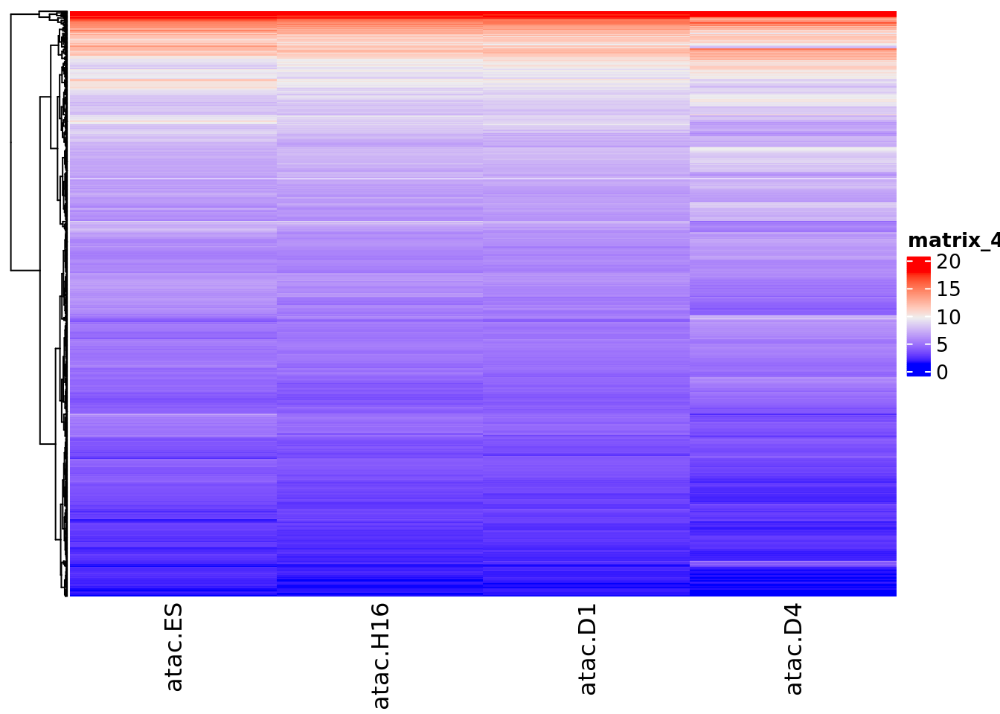

ZEB1 ChIP-seq analyss
Chao Dai
2022-07-27
Last updated: 2022-07-28
Checks: 7 0
Knit directory: NeuronReporters/analysis/
This reproducible R Markdown analysis was created with workflowr (version 1.7.0). The Checks tab describes the reproducibility checks that were applied when the results were created. The Past versions tab lists the development history.
Great! Since the R Markdown file has been committed to the Git repository, you know the exact version of the code that produced these results.
Great job! The global environment was empty. Objects defined in the global environment can affect the analysis in your R Markdown file in unknown ways. For reproduciblity it’s best to always run the code in an empty environment.
The command set.seed(19900924) was run prior to running
the code in the R Markdown file. Setting a seed ensures that any results
that rely on randomness, e.g. subsampling or permutations, are
reproducible.
Great job! Recording the operating system, R version, and package versions is critical for reproducibility.
Nice! There were no cached chunks for this analysis, so you can be confident that you successfully produced the results during this run.
Great job! Using relative paths to the files within your workflowr project makes it easier to run your code on other machines.
Great! You are using Git for version control. Tracking code development and connecting the code version to the results is critical for reproducibility.
The results in this page were generated with repository version e3e8363. See the Past versions tab to see a history of the changes made to the R Markdown and HTML files.
Note that you need to be careful to ensure that all relevant files for
the analysis have been committed to Git prior to generating the results
(you can use wflow_publish or
wflow_git_commit). workflowr only checks the R Markdown
file, but you know if there are other scripts or data files that it
depends on. Below is the status of the Git repository when the results
were generated:
Ignored files:
Ignored: .Rhistory
Ignored: .Rproj.user/
Ignored: code/.snakemake/
Ignored: code/.test/
Ignored: code/chip_snakemake.dag
Ignored: code/logs/
Ignored: code/resources/
Ignored: code/results/
Ignored: code/slurm_logs/
Ignored: code/snakemake_dag.svg
Ignored: code/workflow/notebooks/.ipynb_checkpoints/
Ignored: code/workflow/notebooks/oldTFscreen/.ipynb_checkpoints/
Untracked files:
Untracked: analysis/QC.Rmd
Untracked: code/workflow/wf-5-crispr.smk
Untracked: code/workflow/wf-6-qc.smk
Unstaged changes:
Modified: analysis/_site.yml
Modified: code/workflow/Snakefile
Note that any generated files, e.g. HTML, png, CSS, etc., are not included in this status report because it is ok for generated content to have uncommitted changes.
These are the previous versions of the repository in which changes were
made to the R Markdown (analysis/ChIP-ZEB1-targets.Rmd) and
HTML (docs/ChIP-ZEB1-targets.html) files. If you’ve
configured a remote Git repository (see ?wflow_git_remote),
click on the hyperlinks in the table below to view the files as they
were in that past version.
| File | Version | Author | Date | Message |
|---|---|---|---|---|
| html | e3e8363 | daiuc | 2022-07-27 | Build site. |
| Rmd | 8bbdef0 | daiuc | 2022-07-27 | wflow_publish("ChIP-ZEB1-targets.Rmd") |
| html | 9a16241 | daiuc | 2022-07-27 | Build site. |
| Rmd | f7f0115 | daiuc | 2022-07-27 | wflow_publish("ChIP-ZEB1-targets.Rmd") |
| html | 769f5a1 | daiuc | 2022-07-27 | Build site. |
| Rmd | cea02b8 | daiuc | 2022-07-27 | wflow_publish("ChIP-ZEB1-targets.Rmd") |
| html | fe03a60 | daiuc | 2022-07-27 | Build site. |
| Rmd | af001ef | daiuc | 2022-07-27 | wflow_publish("ChIP-ZEB1-targets.Rmd") |
| html | 6ecb90e | daiuc | 2022-07-27 | Build site. |
| html | f2bc7c1 | daiuc | 2022-07-27 | Build site. |
| Rmd | 763c602 | daiuc | 2022-07-27 | wflow_publish("ChIP-ZEB1-targets.Rmd") |
Sample / Experiment description
See my previous summary on how we decided on the set of ChIP-seq experiments to look for here. See detailed experiment summary here.
This ZEB1 ChIP-seq was performed on HS bipolar neuron induced from
iPSC (doxycycline 4 days). Unfortunately, it seems like they either did
not perform the experiment on input controls or did not publish the
control dataset. So macs2 peaks are called without control
inputs.
Analysis pipeline
I downloaded SRA from NCBI, and use sra tookit to dump fastq. Reads
are single end 50bp, and aligned with bwa. About 20M reads
remain after filtering steps (mapq>20, primary alignment). See
pipeline dag below:
knitr::include_graphics("assets/chip_dag.svg", error = F)
| Version | Author | Date |
|---|---|---|
| 94ccee8 | daiuc | 2022-07-27 |
ZEB1 Chip-seq targets vs. our predicted targets
zeb1 = fread("../code/results/ChIP/ZEB1/targets.bed")
config_data = yaml.load_file("../code/config/config.yaml")
zeb1 = select(zeb1, V1:V10, V14)
colnames(zeb1) = c(config_data$MACS2$NARROW, "gene")ZEB1 targets that overlap a transcription factor in our TF library:
zeb1_chip_targets = zeb1$gene %>% unique
#zeb1[, .(max_neglog10q = max(neglog10q)), by = gene][order(-max_neglog10q),]# read in our interaction analysis result matrix
my.inter = "../code/resources/Interaction_matrix_nofilter_AllTF_20200107.csv"
my.inter = fread(my.inter)
zeb1_my_targets = my.inter[regulator_gene %in% c("ZEB1")] %>% pull(target_gene) %>% uniqueAbout 90% our network predicted ZEB1 targets are likely targets based on ZEB ChIP.
library(ggvenn)
venn_list = list(ZEB1_ChIP = zeb1_chip_targets, ZEB1_pred = zeb1_my_targets)
ggvenn(venn_list, fill_color = c("#0073C2FF", "#EFC000FF"),
stroke_size = .5, set_name_size = 4, auto_scale = T
)
| Version | Author | Date |
|---|---|---|
| f2bc7c1 | daiuc | 2022-07-27 |
Here are the overlapping target genes:
shared_targets = intersect(zeb1_chip_targets, zeb1_my_targets)
as.data.frame(shared_targets)ATAC-seq and RNA-seq of ChIP cross-validated targets
ZEB1 expression level decreases, and most of its targets are also decreasingly expressed, suggesting ZEB1 might be an inhibitor?
ZEB1 gene expression level (normalized CPM):
my.inter[regulator_gene == "ZEB1" & target_gene %in% c("ZEB1", "RERE"),
.(target_gene, tar.ge.ES, tar.ge.H16, tar.ge.D1, tar.ge.D4)] %>%
column_to_rownames("target_gene") %>%
Heatmap
| Version | Author | Date |
|---|---|---|
| f2bc7c1 | daiuc | 2022-07-27 |
ZEB1 ATAC-seq level (normalized CPM):
my.inter[regulator_gene == "ZEB1" & target_gene %in% c("ZEB1", "RERE"),
.(target_gene, atac.ES, atac.H16, atac.D1, atac.D4)] %>%
column_to_rownames("target_gene") %>%
Heatmap
| Version | Author | Date |
|---|---|---|
| f2bc7c1 | daiuc | 2022-07-27 |
ZEB1 targets’ normalized gene expression (CPM)
my.inter[regulator_gene == "ZEB1" & target_gene %in% shared_targets,
.(target_gene, tar.ge.ES, tar.ge.H16, tar.ge.D1, tar.ge.D4)
] %>% column_to_rownames("target_gene") %>%
Heatmap(cluster_columns = F, show_row_names=F)
| Version | Author | Date |
|---|---|---|
| f2bc7c1 | daiuc | 2022-07-27 |
ZEB1 targets’ ATAC normalized reads (CPM:
my.inter[regulator_gene == "ZEB1" & target_gene %in% shared_targets,
.(target_gene, atac.ES, atac.H16, atac.D1, atac.D4)
] %>% column_to_rownames("target_gene") %>%
Heatmap(cluster_columns = F, show_row_names=F)
| Version | Author | Date |
|---|---|---|
| f2bc7c1 | daiuc | 2022-07-27 |
Comparing ZEB1 ChIP-seq signals on predicted target TFs vs. predicted non-target TFs
# generated by rule `DeeptoolsHeatmap`
knitr::include_graphics("assets/chip_ZEB1_heatmap.svg", error =F)
| Version | Author | Date |
|---|---|---|
| 9a16241 | daiuc | 2022-07-27 |
Dag of entire analysis pipeline:
knitr::include_graphics("assets/snakemake_dag.svg", error = F)
| Version | Author | Date |
|---|---|---|
| 9a16241 | daiuc | 2022-07-27 |
sessionInfo()R version 4.1.0 (2021-05-18)
Platform: x86_64-conda-linux-gnu (64-bit)
Running under: Ubuntu 20.04.2 LTS
Matrix products: default
BLAS/LAPACK: /gpfs/commons/home/cdai/miniconda3/envs/smk/lib/libopenblasp-r0.3.18.so
locale:
[1] LC_CTYPE=en_US.UTF-8 LC_NUMERIC=C
[3] LC_TIME=en_US.UTF-8 LC_COLLATE=en_US.UTF-8
[5] LC_MONETARY=en_US.UTF-8 LC_MESSAGES=en_US.UTF-8
[7] LC_PAPER=en_US.UTF-8 LC_NAME=C
[9] LC_ADDRESS=C LC_TELEPHONE=C
[11] LC_MEASUREMENT=en_US.UTF-8 LC_IDENTIFICATION=C
attached base packages:
[1] grid stats graphics grDevices utils datasets methods
[8] base
other attached packages:
[1] ggvenn_0.1.9 ComplexHeatmap_2.10.0 yaml_2.3.5
[4] data.table_1.14.2 forcats_0.5.1 stringr_1.4.0
[7] dplyr_1.0.9 purrr_0.3.4 readr_2.1.2
[10] tidyr_1.2.0 tibble_3.1.7 ggplot2_3.3.6
[13] tidyverse_1.3.2
loaded via a namespace (and not attached):
[1] matrixStats_0.62.0 fs_1.5.2 bit64_4.0.5
[4] lubridate_1.8.0 doParallel_1.0.17 RColorBrewer_1.1-3
[7] httr_1.4.3 rprojroot_2.0.3 tools_4.1.0
[10] backports_1.4.1 bslib_0.4.0 utf8_1.2.2
[13] R6_2.5.1 DBI_1.1.3 BiocGenerics_0.40.0
[16] colorspace_2.0-3 GetoptLong_1.0.5 withr_2.5.0
[19] tidyselect_1.1.2 bit_4.0.4 compiler_4.1.0
[22] git2r_0.30.1 cli_3.3.0 rvest_1.0.2
[25] xml2_1.3.3 labeling_0.4.2 sass_0.4.2
[28] scales_1.2.0 digest_0.6.29 rmarkdown_2.14
[31] pkgconfig_2.0.3 htmltools_0.5.3 highr_0.9
[34] dbplyr_2.2.1 fastmap_1.1.0 rlang_1.0.4
[37] GlobalOptions_0.1.2 readxl_1.4.0 rstudioapi_0.13
[40] farver_2.1.1 shape_1.4.6 jquerylib_0.1.4
[43] generics_0.1.3 jsonlite_1.8.0 vroom_1.5.7
[46] googlesheets4_1.0.0 magrittr_2.0.3 Rcpp_1.0.9
[49] munsell_0.5.0 S4Vectors_0.32.4 fansi_1.0.3
[52] lifecycle_1.0.1 stringi_1.7.8 whisker_0.4
[55] parallel_4.1.0 promises_1.2.0.1 crayon_1.5.1
[58] haven_2.5.0 circlize_0.4.15 hms_1.1.1
[61] magick_2.7.3 knitr_1.39 pillar_1.8.0
[64] rjson_0.2.21 codetools_0.2-18 stats4_4.1.0
[67] reprex_2.0.1 glue_1.6.2 evaluate_0.15
[70] modelr_0.1.8 png_0.1-7 vctrs_0.4.1
[73] tzdb_0.3.0 httpuv_1.6.5 foreach_1.5.2
[76] cellranger_1.1.0 gtable_0.3.0 clue_0.3-61
[79] assertthat_0.2.1 cachem_1.0.6 xfun_0.31
[82] broom_1.0.0 later_1.3.0 googledrive_2.0.0
[85] gargle_1.2.0 iterators_1.0.14 IRanges_2.28.0
[88] cluster_2.1.3 workflowr_1.7.0 ellipsis_0.3.2